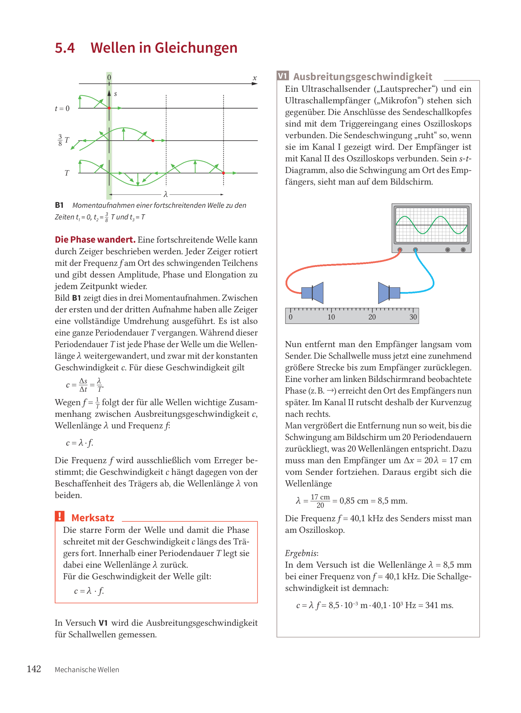

Was ist eine Welle?
In diesem Einstieg untersuchst du die Grundidee der Welle: Eine Welle ist keine wandernde Materie, sondern eine sich ausbreitende Störung.
Was genau breitet sich bei einer Welle aus, und was machen die einzelnen Teilchen des Trägers dabei?
- Lies die Erklärungen in kleinen Schritten.
- Nutze die Buchseiten als Beobachtungsmaterial.
- Prüfe dein Verständnis direkt mit den Aufgaben.
Die vorhandene Einstiegsseite erklärt Wellen als fortschreitende Störungen. Das Dorn-Bader-Buch vertieft dazu Längs- und Querwellen, die Beschreibung von Wellen sowie den Zusammenhang \(c = \lambda \cdot f\).
Welle = sich ausbreitende Störung

B1 a) Ebene Wellen auf einem See, b) Kreiswellen in einer Pfütze, c) La Ola im Fußballstadion
Wenn an einem Träger ein Teilchen ausgelenkt wird, geraten benachbarte Teilchen wegen der Kopplung ebenfalls in Bewegung. Die Störung wandert weiter, auch wenn jedes Teilchen nur um seine Ruhelage schwingt.
Voraussetzungen für die Entstehung von Wellen
Die Ausbreitung mechanischer Wellen erfordert zunächst einen Träger, in dem sich schwingungsfähige Teilchen befinden. Solche Träger können feste, flüssige oder gasförmige Stoffe sein.
Elektromagnetische Wellen brauchen dagegen keinen materiellen Träger. Sie können sich auch im Vakuum ausbreiten, zum Beispiel das Licht von der Sonne zur Erde.
Bei mechanischen Wellen reicht ein Stoff allein aber noch nicht aus. Die Teilchen müssen schwingungsfähig sein und untereinander eine Kopplung besitzen. Nur dann kann sich eine von außen eingebrachte Störung über das gesamte System fortpflanzen.
Zur Veranschaulichung nutzt man oft das Kugel-Feder-Modell. Die Kugeln stehen für die Teilchen des Trägers, die Federn für die Kopplung zwischen ihnen. In vereinfachten Skizzen werden diese Federn oft nur noch als Verbindungsstriche dargestellt.
- einen Träger
- schwingungsfähige Teilchen
- eine Kopplung zwischen den Teilchen
Schall braucht einen Träger. Licht nicht. Genau deshalb kann Sonnenlicht durch das Vakuum des Weltalls zur Erde gelangen, Schall aber nicht.
Bei einer mechanischen Welle führen die Teilchen des Trägers nacheinander eine Bewegung aus. Transportiert werden dabei Energie, Impuls und Information, aber nicht Materie.

Wie breitet sich eine harmonische Welle aus?
Bei einer harmonischen Welle beginnt ein Oszillator am Ort \(x = 0\) mit seiner Bewegung. Danach werden weitere Oszillatoren nacheinander erfasst. Jeder einzelne schwingt harmonisch, aber nicht alle beginnen gleichzeitig.
Nach einer ganzen Schwingungsdauer \(T\) hat sich die Störung so weit ausgebreitet, dass wieder dieselbe Phase erreicht ist. Der Abstand zwischen zwei gleichphasigen Punkten ist dann die Wellenlänge \(\lambda\).
Du kannst dieselbe Welle auf drei Arten betrachten. Räumlich fragst du: Wie sieht die Welle zu einem bestimmten Zeitpunkt entlang des Ortes aus? Zeitlich fragst du: Wie bewegt sich ein einzelnes Teilchen an einem festen Ort im Verlauf der Zeit? Räumlich-zeitlich verfolgst du, wie eine bestimmte Phase durch Ort und Zeit wandert.
Gerade diese räumlich-zeitliche Sicht ist wichtig: Sie zeigt, dass die Phase mit einer bestimmten Geschwindigkeit durch den Träger läuft. Deshalb spricht man hier auch von der Phasengeschwindigkeit \(c\). Transportiert werden dabei nicht die Teilchen selbst, sondern Information und Energie.

Genaue Beschreibung der Ausbreitung
Ein Erreger lenkt zunächst ein erstes Teilchen aus seiner Gleichgewichtslage aus. Durch die elastische Kopplung wird diese Auslenkung zeitversetzt auf das nächste Teilchen übertragen. Genau diesen Zeitversatz beschreibt man als Phasenverschiebung. Auf diese Weise breitet sich die Störung Schritt für Schritt durch das gesamte System aus.
Die Ausbreitungsgeschwindigkeit hängt dabei von zwei Dingen ab: von der Stärke der elastischen Kopplung und von der Trägheit der Teilchen. Je stärker die Kopplung, desto schneller wird das Nachbarteilchen beschleunigt. Je größer die Masse der Teilchen, desto träger reagiert das System und desto langsamer läuft die Störung weiter.
In der Regel ist diese Geschwindigkeit eine Eigenschaft des Systems selbst. Sie hängt also vor allem vom Träger ab und nicht einfach davon, wie stark oder wie oft du anregst. Wird ein Teilchen sinusförmig angeregt, entsteht daraus eine harmonische Welle.
Bei einer mechanischen Welle breitet sich nicht Materie aus, sondern der Bewegungszustand der Teilchen. Die Teilchen schwingen um ihre Gleichgewichtslage und bleiben im Mittel am selben Ort.
Energieformen in Wellen
Wenn ein Teilchen die Störung an das nächste weitergibt, verrichtet es über die Kopplung zunächst Beschleunigungsarbeit und dann Spannarbeit. Dadurch wird Energie von einem Teilchen zum nächsten übertragen.
Mit der Störung wandern deshalb Spannenergie und kinetische Energie durch das System. Ist die Spannenergie gerade maximal, dann ist die kinetische Energie null. Ist die kinetische Energie maximal, ist die Spannenergie kleiner oder null. Das kennst du vom Federpendel: Auch dort wechseln sich diese Energieformen ständig ab.
Die Energie steckt dabei immer in denjenigen Teilchen, die gerade von der Störung erfasst sind. Eine Welle überträgt somit nicht nur Energie, sondern auch Impuls und Information durch das System.
Eine Welle ist eine fortschreitende Störung. Die Teilchen schwingen lokal, aber die Störung selbst wandert durch den Träger.
Aufgabe:
Heftaufschrieb 1: Schreibe alles wichtige auf, was du über Wellen bis jetzt gelernt hast.
Tipp: Benutze die Callout-Boxen.
Wellentypen
Es gibt Transversalwellen und Longitudinalwellen.
Als erstes betrachten wir Transversalwellen. Was bedeutet das eigentlich? Schau dir die Definition an und versuche, dir passende Beispiele selbst zu überlegen.
Bei einer Transversalwelle schwingen die Teilchen senkrecht zur Ausbreitungsrichtung. Eine Momentaufnahme zeigt eine Folge von Wellenbergen und Wellentälern.
Was gilt dann für eine Longitudinalwelle? Überlege dir auch hierzu eigenständig Beispiele.
Bei einer Longitudinalwelle schwingen die Teilchen parallel zur Ausbreitungsrichtung. Eine Momentaufnahme zeigt eine Folge von Verdichtungen und Verdünnungen.
Für eine bessere Veranschaulichung kannst du die folgenden Simulationen nutzen. Beobachte genau, in welche Richtung sich die Teilchen bewegen und wie die Störung durch das System läuft.
Simulation: Transversalwelle
Die Teilchen schwingen auf und ab, während die Welle nach rechts läuft.
Simulation: Longitudinalwelle
Die Teilchen schwingen vor und zurück. Sichtbar werden Verdichtungen und Verdünnungen.
Zuordnungsübung: Sortiere die Begriffe
Ziehe die Karten in das passende Feld. Achte darauf, ob die Teilchen parallel oder senkrecht zur Ausbreitungsrichtung schwingen und welche Beispiele typisch sind.
Wellenfronten, Wellenstrahlen und das Huygenssche Prinzip
Zwischen der Schwingung am Erreger und der Schwingung an einem Ort im Wellenfeld liegt meist eine Phasenverschiebung. Alle Punkte, die von der Quelle gleich weit entfernt sind, haben aber dieselbe Laufzeit und schwingen deshalb in derselben Phase.
Eine Wellenfront verbindet benachbarte Punkte gleicher Phase. Auf ihr liegen also alle Punkte, die die gleiche Laufzeit von der Quelle haben.
Wellenstrahlen oder Wellennormalen stehen senkrecht auf der Wellenfront. Sie zeigen die Ausbreitungsrichtung der Welle an.
Damit kannst du zwei Darstellungen derselben Welle unterscheiden: Die Wellenfront zeigt dir Orte gleicher Phase, der Wellenstrahl zeigt dir die Richtung, in die sich die Störung fortpflanzt.


Kreiswellen siehst du zum Beispiel, wenn ein Wassertropfen in ruhiges Wasser fällt. Ebene Wellen entstehen etwa, wenn du eine Wasseroberfläche mit einem geraden Stab oder Lineal anregst. Weit entfernt von einer punktförmigen Quelle wirken selbst Kreiswellen oft fast wie ebene Wellen, weil der gekrümmte Ausschnitt sehr groß wird.
Das Huygenssche Prinzip
Das Huygenssche Prinzip beschreibt, wie sich eine Wellenfront weiterbewegt: Jeder Punkt einer Wellenfront kann als Ausgangspunkt einer neuen kleinen Elementarwelle gedacht werden. Die gemeinsame Einhüllende dieser Elementarwellen bildet nach kurzer Zeit die nächste Wellenfront.

Für alle Wellenarten gilt: Jede Stelle einer Wellenfront kann als Ausgangspunkt einer Elementarwelle aufgefasst werden.
Damit lassen sich nicht nur gerade Ausbreitung, sondern auch Beugung, Reflexion und Brechung anschaulich erklären.
Besonders gut siehst du das bei der Beugung an einem schmalen Spalt: Hinter der Öffnung breitet sich die Welle nicht einfach nur gerade weiter aus. Stattdessen entstehen hinter dem Spalt neue kreisförmige oder kugelförmige Elementarwellen. Genau deshalb fächert sich die Welle auf.
Simulation: Beugung am Spalt
Von links trifft eine ebene Welle auf eine Wand mit einem Spalt. Hinter dem Spalt werden die Punkte im offenen Bereich zu Ausgangspunkten vieler dünn gezeichneter Elementarwellen.
- Bei kleinem Spalt breitet sich die Welle hinter der Öffnung stärker fächerförmig aus.
- Die dünnen Kreise zeigen die Elementarwellen nach Huygens.
- Die kräftige Linie ist die neue Wellenfront als Einhüllende dieser Elementarwellen.
Gehe noch einmal zur Simulation auf der vorherigen Seite oder später zu den Seiten zu Wellen und Spalt. Achte dort bewusst darauf, wie sich Wellenfronten verändern, wenn du Amplitude oder Frequenz anpasst, und wo du Wellenstrahlen mitdenken kannst.
Wellenfronten verbinden Punkte gleicher Phase. Wellenstrahlen stehen senkrecht dazu und zeigen die Ausbreitungsrichtung. Mit dem Huygensschen Prinzip kannst du erklären, wie aus einer Wellenfront die nächste entsteht und warum Wellen an Öffnungen gebeugt werden.
Wie beschreibt man eine Welle?
Im folgenden geht es vor allem um zwei Blickrichtungen auf dieselbe Welle. Du kannst die Welle zu einem festen Zeitpunkt entlang des Ortes anschauen oder an einem festen Ort verfolgen, wie sich die Auslenkung mit der Zeit ändert.
- Räumliche Perspektive: Wie sieht die Welle an einem bestimmten Zeitpunkt entlang des Ortes aus (Momentaufnahme)?
- Zeitliche Perspektive: Wie schwingt ein einzelner Oszillator an einem festen Ort im Verlauf der Zeit?
Um die räumliche Perspektive zu verstehen, betrachte folgende Internetseite mit einem Spiel: Wavemaker.
Dieselbe Welle kann unterschiedlich beschrieben werden. Räumlich erkennst du die Wellenlänge, zeitlich die Schwingung eines einzelnen Teilchens.
Wellen in Gleichungen
Wenn sich die Phase innerhalb einer Schwingungsdauer \(T\) um genau eine Wellenlänge \(\lambda\) weiterbewegt, dann folgt daraus der zentrale Zusammenhang:
\[ c = \lambda \cdot f \] Die Ausbreitungsgeschwindigkeit \(c\) hängt vom Träger ab, die Frequenz \(f\) vom Erreger. Daraus ergibt sich die Wellenlänge \(\lambda\).

Transfer: Was bedeutet das für echte Beispiele?
Du kennst jetzt die Grundidee. Entscheidend ist nun, dass du das auf neue Situationen übertragen kannst.
Was würdest du bei einer Lautsprecherwelle in Luft erwarten? Und woran erkennst du bei einer Seilwelle sofort, dass keine Materie transportiert wird?
Zusammenfassung, Quellen und Weiterforschen
Jetzt hast du das gelernt: Eine Welle ist eine sich ausbreitende Störung. Du kannst Längs- und Querwellen unterscheiden, räumliche und zeitliche Beschreibung auseinanderhalten und den Zusammenhang \(c = \lambda \cdot f\) deuten.
- Dorn-Bader Physik Kursstufe, Buchseiten 138–144 aus der von dir angegebenen PDF-Datei.
- Vorhandene Web-Vorlage im Projekt:
wellen/wellen-book..htmlbeziehungsweise die entsprechende GitHub-Pages-Seite. - LEIFIphysik: HUYGENSsches Prinzip zur Beschreibung von mechanischen Wellen.
- LEIFIphysik: Beugung.
- OpenStax University Physics Volume 3, Abschnitt 4.3 zur Deutung von Beugung mit Huygens-Wellen.
- Warum können sich Schallwellen nicht im Vakuum ausbreiten?
- Weshalb liefern Seismogramme Informationen über das Erdinnere?
- Wie verändert sich \(\lambda\), wenn du \(f\) erhöhst, der Träger aber gleich bleibt?